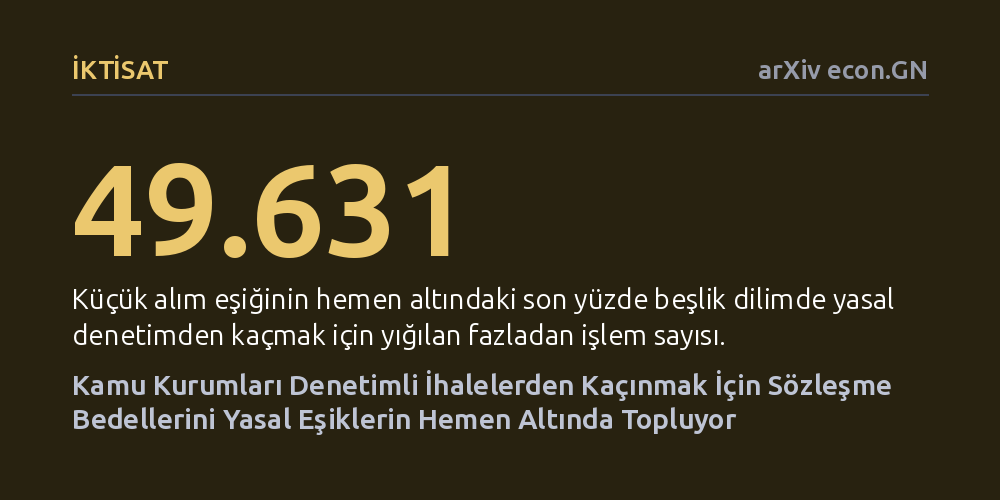

IKTISAT · arXiv econ.GN · 2026-10-23
Kolombiya'daki 8,5 milyonu aşkın kamu alımı incelenerek kurumların rekabetçi ihale kurallarından kaçmak için sözleşme bedellerini manipüle edip etmediği araştırıldı. Kamu alıcılarının denetimi hafifletmek için sözleşme değerlerini yasal eşiklerin hemen altına yığdığı ve bu alımlarda rekabetin yarıya indiği belirlendi.
Kamu harcamalarındaki verimsizlik ve usulsüzlüklerin yalnızca doğrudan rüşvetle değil, bürokratların yasal kuralları ve parasal sınırları kendi lehlerine esnetmesiyle de sistematik biçimde gerçekleştiğini gösteriyor.

Modern devletlerde kamu ihaleleri, vergi mükelleflerinin parasının doğru harcanması amacıyla katı kurallarla yürütülür. Ancak her küçük alım için uzun ve maliyetli açık ihaleler düzenlemek ciddi bir bürokratik yük doğurur. Bu nedenle ihale mevzuatları belirli parasal eşikler koyar: Bu sınırların altındaki alımlarda kamu kurumlarına daha esnek, daha hızlı ve daha az rekabetçi yöntemler kullanma yetkisi tanınır. Buradaki temel sorun, bürokratlara verilen bu serbestliğin kötüye kullanıma açık olmasıdır.
Eğer bir kamu yöneticisi, yasal denetimden ve açık rekabet zorunluluğundan kaçmak amacıyla bir işin bedelini bilinçli olarak sınırın hemen altında gösterebiliyorsa kuralın amacı boşa çıkar. Bu durum yalnızca kamu kaynaklarının israf edilmesine yol açmakla kalmaz; aynı zamanda belirli firmalara ayrıcalık tanınmasına ve hesap verebilirliğin zayıflamasına zemin hazırlar.
Kamu alıcılarının yasal sınırları manipüle edip etmediğini tespit etmek zordur; çünkü sözleşmeler genellikle 100 bin veya 1 milyon gibi yuvarlak sayılarda yoğunlaşır. Bu durum, yığılmanın yasal kurallardan mı yoksa insanların yuvarlak sayıları tercih etmesinden mi kaynaklandığını ayırt etmeyi güçleştirir. Kolombiya ise araştırmacılara son derece elverişli bir zemin sunar: Ülkedeki ihale eşikleri her kurumun bütçe büyüklüğüne göre beş ayrı grupta belirlenir ve her ocak ayında asgari ücret artışına göre otomatik olarak değişir.
Araştırmacılar, Kolombiya'nın kamu ihale sistemindeki 2011-2026 yıllarını kapsayan 8,5 milyonu aşkın süreci inceledi. Her kamu kurumunun o yıla ait kendi yasal sınırını izleyen yazarlar, ayrıca başkanlık seçimlerinden önceki dört ay boyunca uygulanan doğrudan temin yasağının alım takvimini nasıl etkilediğini geriye dönük ekonometrik modellerle değerlendirdi.
İncelemeler, kamu alıcılarının sözleşme bedellerini yasal sınırların hemen altında kalacak biçimde sistematik olarak ayarladığını ortaya koydu. Küçük alım sınırının hemen altındaki son yüzde beşlik dilimde 49.631 adet olağandışı fazladan işlem tespit edildi. Benzer şekilde, açık ihale sınırının hemen altında da 3.157 fazladan alım kümelendi. Bu yığılmanın yuvarlak sayılardan kaynaklanmadığı netleşti; zira eşikler asgari ücretle birlikte her yıl kaydığında, yığılma noktası da eşikle birlikte yer değiştirdi.
Seçimle göreve gelen belediye başkanları ve valilerce yönetilen yerel idarelerin, merkezi hükümete bağlı atanan kurumlara kıyasla bu eşik manipülasyonuna belirgin şekilde daha fazla başvurduğu görüldü. Üstelik sınırın altına çekilen bu sözleşmeler kamunun aleyhine sonuçlandı: Açık ihale eşiğinin hemen altına itilen işlerde teklif veren firma sayısı yarı yarıya azaldı, kamu daha düşük indirimler alabildi ve iş tamamlanmadan sözleşme bedelinin artırılma sıklığı yükseldi.
Zamanlama boyutu incelendiğinde ise başkanlık seçimleri öncesindeki dört aylık doğrudan alım yasağının bu yöntemi yüzde 95 oranında durdurduğu; ancak yasaktan önceki son iki haftada doğrudan alım sözleşmelerinde yüzde 209'luk sert bir patlama yaşandığı belirlendi. Kurumlar doğrudan temin yapamadıklarında ise alımlarını kısmen eşik altı yöntemlere kaydırdı.
Elde edilen bulgular, kamu yönetiminde yalnızca parasal sınırlar çizerek denetim sağlamanın yetersiz kaldığını açıkça gösteriyor. Karar vericiler katı parasal sınırlar koyduğunda, memurlar kuralların ruhuna uymak yerine sözleşme tutarlarını sınırın birkaç peso altına iterek sistemi biçimsel olarak dolanabiliyor. Benzer tablonun Şili'de de görülmesi ve 2024 yılında kaldırılan bir eşikten sonra yığılmanın anında yok olması, bunun evrensel bir kurumsal teşvik meselesi olduğunu kanıtlıyor.
Sonuç olarak, kamu harcamalarında şeffaflığı ve kamu çıkarını korumak için sadece nihai sözleşme bedelinin yasal sınırın altında olup olmadığına bakmak yetersizdir. Yasal eşiklerin hemen altında kalan alımlar, teklif veren firma sayıları ve sonradan yapılan sözleşme artışları otomatik risk algoritmalarıyla özel olarak denetlenmelidir.